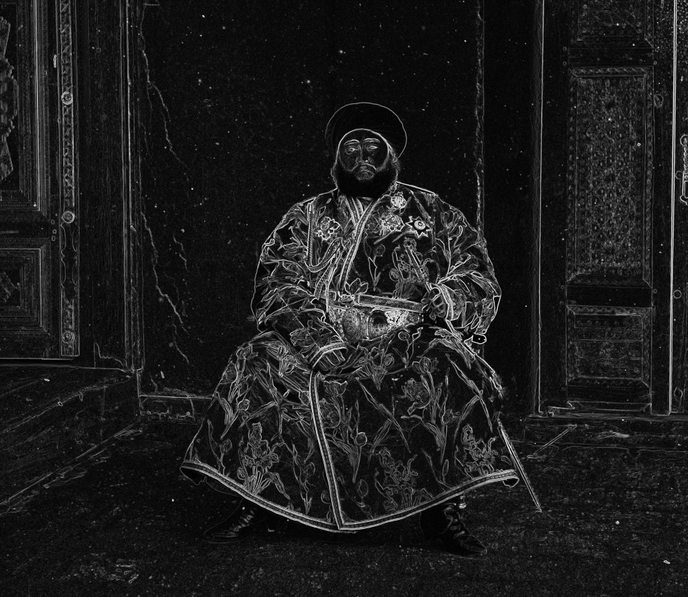
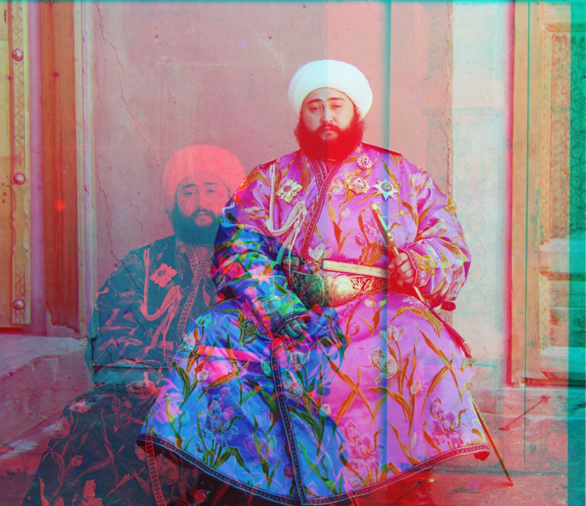

Project 1
Deciding the measurement
The core use of the measurement is telling how good the current overlay is. So it takes in two images and outputs a single number that we will use to decide whether the image current overlay is accurate or not. I used two methods.
L2 measurement
def measure_l2(a, b):
return np.sum((a - b) ** 2)The L2 norm (sum of squared differences) overlays the two channels and adds up the squared difference at every pixel. When the channels are aligned, the same edges and textures sit on top of each other, every difference is small, and the sum is low; when they are off, bright edges land on dark regions and the squared differences blow up. We want to minimize this number.
NCC measurement
def measure_ncc(a, b):
a = a.flatten() - np.mean(a)
b = b.flatten() - np.mean(b)
ncc = np.dot(a / np.linalg.norm(a), b / np.linalg.norm(b))
return -nccNormalized cross-correlation flattens each channel to a vector, subtracts its mean, scales it to unit length, and takes the dot product.
How alignment uses the measure. I had two aligners, one naive for jpeg, the other uses the pyramid idea and is for larger images. Both use measurement in the same way, during their loop in looping through all the different offsets, we overlay the images with the offset and throw the result into the measurement, only keeping the offset number producing the lowest measurement.
low-resolution JPEGs
For stage 1 we have the small JPEGs, and the exhaustive ±15 search is fast enough. We basically search for offset in the x y direction each ±15, and use our measurement to track the most 'successful' example, here are the results.
cathedral · G (dy, dx) = (5, 2) R = (12, 3)


monastery · G (dy, dx) = (−3, 2) R = (3, 2)


tobolsk · G (dy, dx) = (3, 3) R = (6, 3)


Multi-scale pyramid
The true offset for bigger images can go way beyond 15 pixels so we use the pyramid approach, it roughly follows three steps. 1. Deciding a scale factor (the default is scale down until the smaller side is about 64 pixels, so ⌊log₂(smaller side)⌋ − 6 levels).
Currently, I looked at the Van Gogh test video in the lecture, and I think the method of directly decimating pixels isn't the most ideal, because it aliases. I learned in the lecture that Gaussian smoothing and then cutting is the anti-aliasing technique, so I used it here: blur the image with a Gaussian to wipe out the fine detail that can't survive at the smaller size, then cut out every nth pixel. We use the following downsample method:
def downsize(img, factor):
if factor == 1:
return img
blurred = cv.GaussianBlur(img, (0, 0), factor)
return blurred[::factor, ::factor]2. With the current scale, run naive align as described above to extract the current best offset under the current scale. 3. We take the current scale and then upsample our image and scale to get a new scale (usually just multiply by 2), and we search locally (±15 default) around that new offset, following the same naive algorithm, just different starting point. Here are the results, notice one of the images (emir) requires a special trick that I will explain later.


Offsets found for all 14 provided plates (green and red relative to blue):
| Plate | G (dy, dx) | R (dy, dx) |
|---|---|---|
| cathedral | (5, 2) | (12, 3) |
| monastery | (−3, 2) | (3, 2) |
| tobolsk | (3, 3) | (6, 3) |
| church | (25, 4) | (58, −4) |
| emir | (49, 24) | (107, 40) — on edges |
| harvesters | (60, 17) | (124, 13) |
| icon | (41, 17) | (89, 23) |
| ilemselga | (40, 7) | (130, 11) |
| melons | (81, 10) | (178, 13) |
| religous_painting | (27, 3) | (68, 7) |
| self_portrait | (79, 29) | (176, 37) |
| siren | (49, −6) | (96, −25) |
| three_generations | (53, 14) | (111, 11) |
| wharf | (15, −7) | (82, −16) |
Choosing the pyramid depth
I also need to choose the pyramid depth, I did experiments with different depth and decided to end up with medium.


Shallow doesn't downsize enough so its range might not be wide enough to cover it, and the result stays fringed. If we search too deep, we are wasting time and computation while medium gives the same result.
Automatic cropping
I implemented auto_crop, which removes the borders automatically:
def auto_crop(b, g, r, max_frac=0.18):
def bounds(im):
h, w = im.shape
def scan(mean, std, n):
lim = int(n * max_frac)
def is_frame(k):
return mean[k] < 0.20 or mean[k] > 0.9 or std[k] < 0.05
lo = 0
while lo < lim and is_frame(lo):
lo += 1
hi = n - 1
while hi > n - 1 - lim and is_frame(hi):
hi -= 1
return lo, hi + 1
t, btm = scan(im.mean(axis=1), im.std(axis=1), h)
l, rgt = scan(im.mean(axis=0), im.std(axis=0), w)
return t, btm, l, rgt
box = [bounds(x) for x in (b, g, r)]
t = max(x[0] for x in box); btm = min(x[1] for x in box)
l = max(x[2] for x in box); rgt = min(x[3] for x in box)
return b[t:btm, l:rgt], g[t:btm, l:rgt], r[t:btm, l:rgt]It scans inward from each edge and treats a row or column as frame while it is nearly all black (<0.2 intensity), nearly all white (>0.9 intensity), or nearly flat (<0.05 std). The current numbers are a little hard coded (I changed several values) but it worked well with the current example — I tried to be lenient, better to not cut enough than cut too much.


Better features (edges)
This is specially to tackle the emir image, which is the only image that didn't come out correctly from my original approach. emir's robe is bright in the red exposure but nearly black in the blue one (one up one down), so lining up intensities will displace the red channels.
I first studied what an edge is and what an edge map is, and I came across this video. I then found its original implementation here, which I used to generate this edge map:
def edges(im):
gx = cv.Sobel(im, cv.CV_32F, 1, 0, ksize=3)
gy = cv.Sobel(im, cv.CV_32F, 0, 1, ksize=3)
return np.sqrt(gx * gx + gy * gy)
I understand Sobel roughly as designing a filter to slide across the image to produce different contrasting regions. The contrasting regions are generated from this kernel — a small grid of weights that slides over the image and, at each spot, combines the neighboring pixels into one number. This kernel is specially designed to detect a change, the gradient of the pixels, so it has a negative on one side and a positive on the other — negative on the left and positive on the right. That way we can detect a change in X, and the Y kernel detects a change in Y, which we use to find the different edges.
This makes sense in terms of a dot product: sliding the kernel over a patch and summing is exactly a dot product of the kernel with that patch, and a dot product is largest when the two point the same way. Where the patch genuinely steps from dark to bright the way the kernel's negative-to-positive pattern does, the terms reinforce and the response is large — a strong edge. Where the patch is flat, the negatives and positives cancel to nearly zero. So the kernel is a little template for "a change," and the dot product measures how strongly each spot matches it.
I then implemented a measurement based on the edge differences. This works way better than brightness, because an edge is contrast and relative — it doesn't depend on absolute brightness and these deviations, so it works.

Gallery · my selections
Three plates I picked from the Library of Congress Prokudin-Gorskii collection, each shown as the low-resolution JPEG aligned single-scale and the full-resolution TIF aligned with the pyramid (L2 and NCC).
Sirenʹ (Lilacs) — Library of Congress ↗


V IAsnoĭ poli͡anie (In Yasnaya Polyana) — Library of Congress ↗


Sultan-Bentskaya Dam, Murghab Estate — Library of Congress ↗